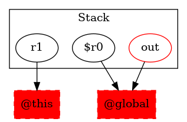

-1 : r1 := @this: Test5DerivedClass
43 : $r0 = |java.lang.System: java.io.PrintStream out| ->class soot.jimple.internal.JAssignStmt {Left: class soot.jimple.internal.JimpleLocal, Right: class soot.jimple.StaticFieldRef}
43 : virtualinvoke $r0.|java.io.PrintStream: void println(java.lang.String)|("Test5DerivedClass: Implementing test5_3")
44 : return
